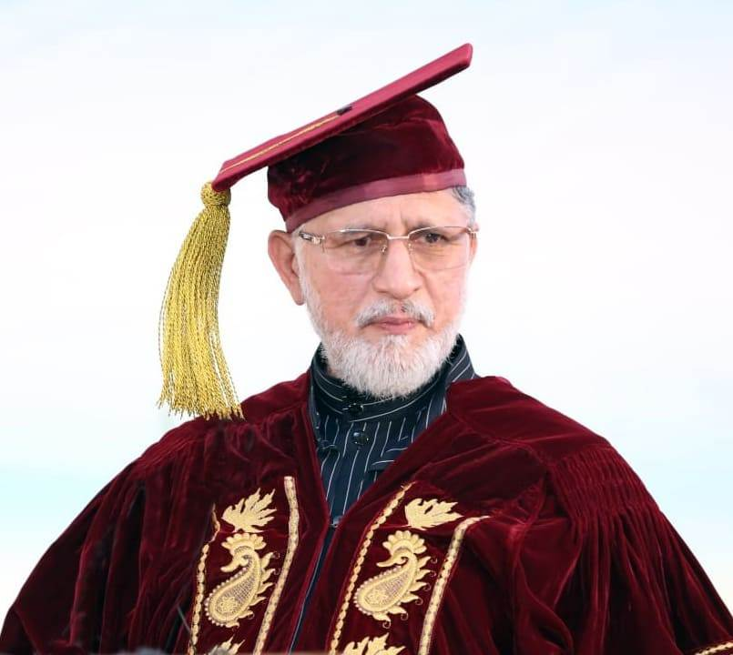
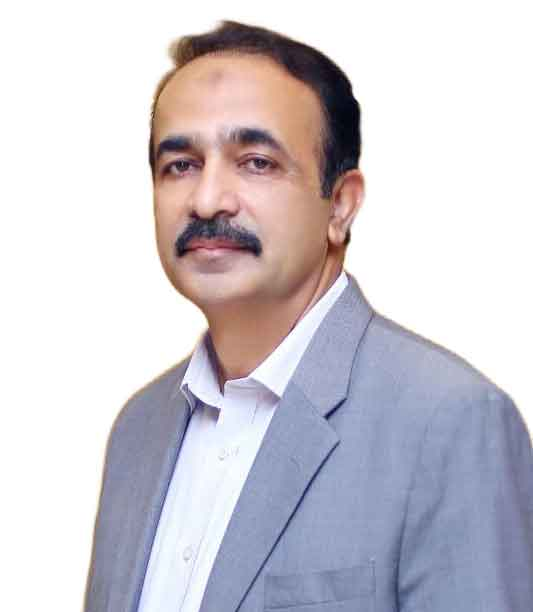
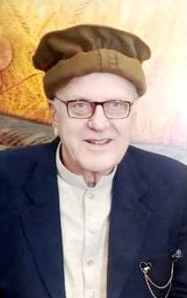
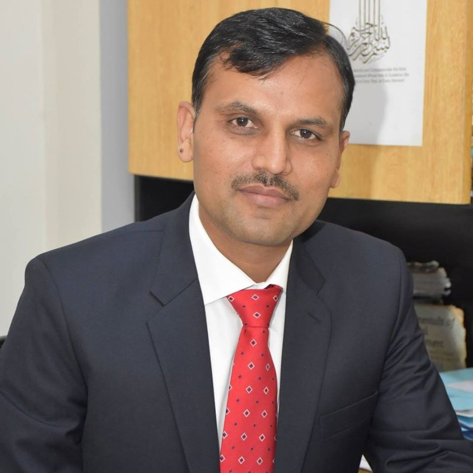
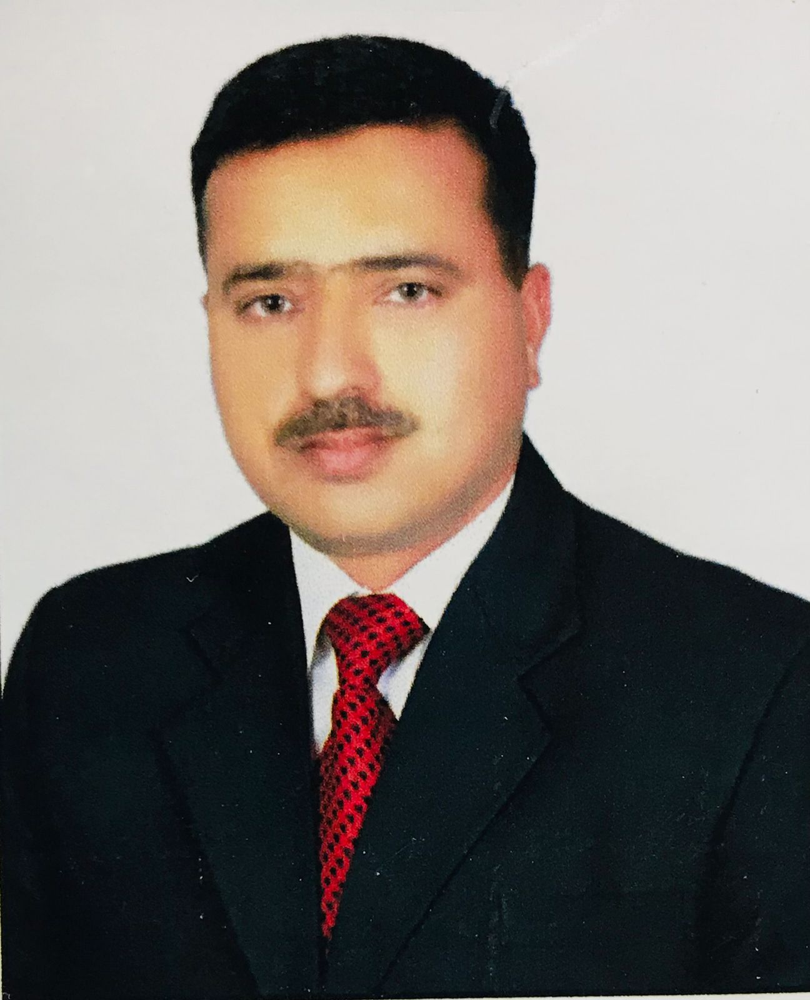
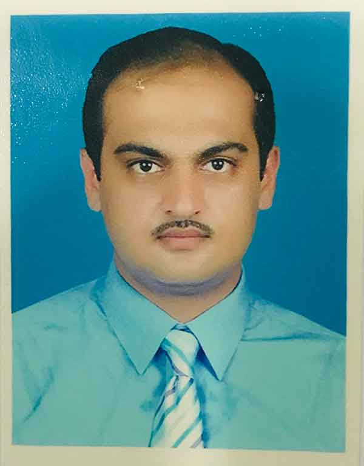
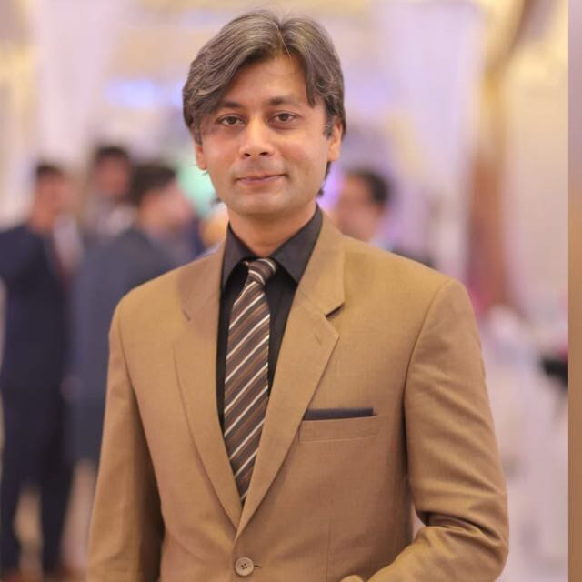

To develop a real human character that becomes a source of peace, love, ethical values, spirituality and integration, one must work for society’s unity and avoid conflict; which is why Minhaj University Lahore (MUL) promotes the concept of knowledge that connects the ancient with the modern, secular with the spiritual, and the outer aspects of the personality with the inner ones. Always remember that knowledge is more than just reading books, listening to lectures, taking notes, giving exams, and receiving degrees. While all these factors are unavoidable prerequisites for an academic career, knowledge itself is an entirely different thing.
Dedicated to the academic and spiritual study of Islamic theology, Qur’anic sciences, Hadith, and Islamic jurisprudence, integrating classical scholarship with contemporary issues.
Providing cutting-edge education in Software Engineering, Computer Science, Artificial Intelligence, and Information Technology.
Developing future leaders in Business Administration, Marketing, Finance, and Human Resource Management. The faculty emphasizes entrepreneurship, strategic thinking, and real-world business practices.
Promoting critical thinking and understanding of society through programs in Psychology, Sociology, International Relations, and Political Science.
Offering modern engineering education including Electrical Engineering and emerging technological disciplines, preparing students for industrial and research careers. practices.
Enhancing communication and literary analysis through programs in English, Urdu, Arabic, and other languages, focusing on linguistic skills and cultural studies.
Culture of academic excellence and moral values
Pursuit of excellence in life
Respect for the rights and dignity of others
An environment of trust, cooperation, and accountability

Dr. M. Tayyab
HoD - Economics & Finance

Dr. Herman Roborgh
HoD - Religion and Philosophy

Dr. Muhammad Kashif Khan
HoD - Business & Management Sciences

Dr. Assad Mehmood Khan
HoD - Urdu (Language & Literature)

Dr. Kalim Ullah
HoD - Pharmacy

Dr. Salman Amin
HoD - Media and Communication Studies